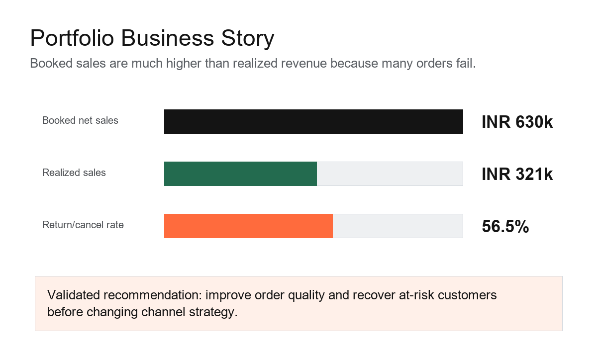

Task 1: Data Wrangling
Cleaned the dataset, assessed quality, transformed fields, and prepared reliable analysis-ready data.
Open repositoryCapstone Integration and Portfolio Finalization
A complete internship project covering data cleaning, EDA, dashboarding, statistical validation, and business storytelling.
Cleaned the dataset, assessed quality, transformed fields, and prepared reliable analysis-ready data.
Open repositoryMeasured sales trends, category performance, channel behavior, and business questions with SQL-style outputs.
Open repositoryBuilt a deep-dive customer segmentation analysis and interactive dashboard for KPI monitoring.
Open repositoryCreated a final stakeholder deck and validated a business hypothesis with a two-proportion z-test.
Open repository
The strongest finding is that the business should not only chase order volume. The key issue is revenue leakage: booked sales are much higher than realized sales because many orders are returned or cancelled.
The statistical test showed that online versus offline channel difference was not significant at alpha 0.05. The practical recommendation is to improve order quality and focus recovery actions on high-risk customer segments.
Download final presentation